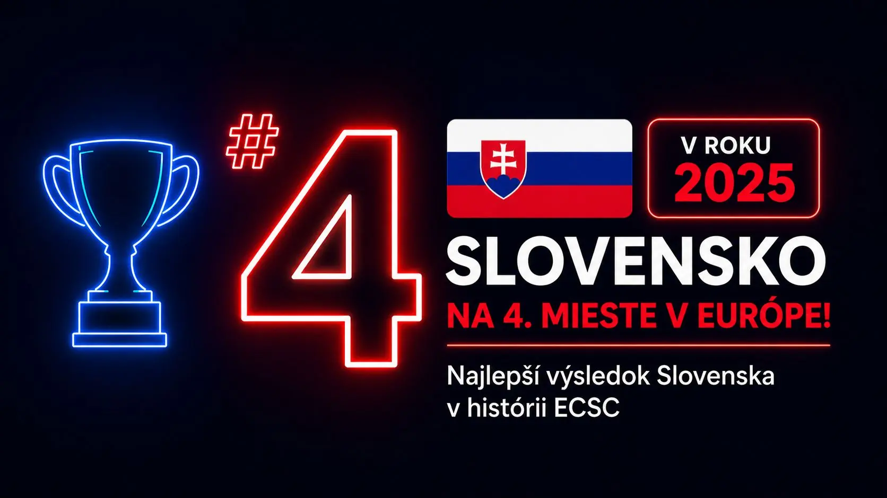
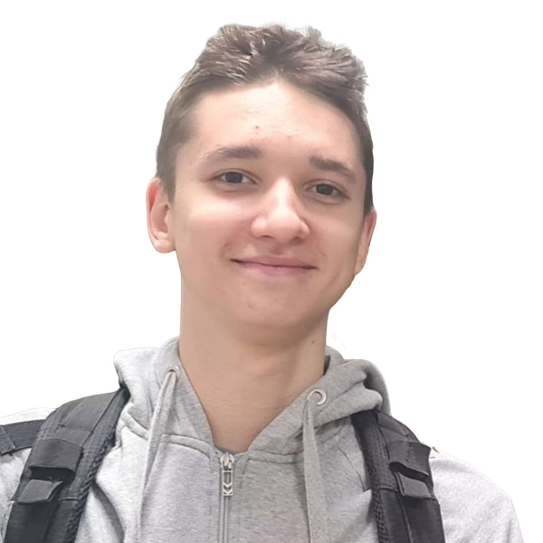
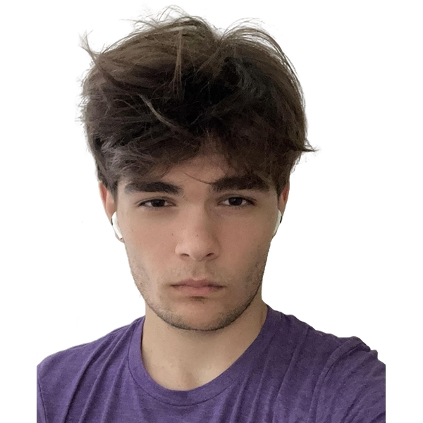

Marek Geleta
Kapitán

European Cybersecurity Challenge
Varšava, Poľsko · 6. – 10. októbra 2025 · 4. miesto spomedzi 40 krajín — najlepší výsledok Slovenska v histórii.

výsledok
Počas Attack&Defense dňa bol náš tím na prvom mieste pred zamrznutím výsledkovej tabule. Po spočítaní všetkých bodov obsadilo Slovensko neuveriteľné štvrté miesto.
Tlačová správa (teraz.sk) ↗// ako to bolo
Na európskom finále The European Cybersecurity Challenge vo Varšave sa slovenský reprezentačný tím zúčastnil po štvrtýkrát. Tím tvorilo desať hráčov — jedno dievča a deväť chlapcov vo veku od 16 do 22 rokov. Počas dvoch súťažných dní zdolávali CTF zadania z oblasti kryptografie, binárnej exploitácie, reverzného inžinierstva či forenznej analýzy.
Národný tím vznikol z výberu 20 účastníkov národnej súťaže CyberGame a pripravoval sa celý rok: absolvoval medzinárodný bootcamp vo Viedni a šesť víkendových bootcampov v kaštieli v Brunovciach.
Sezóna 2025 bola výnimočná aj mimo ECSC: vo februári obsadili štyria členovia tímu 2. miesto vo finále súťaže Guardians, v marci vyhrali Zero Days CTF v Dubline a v septembri sa tím kvalifikoval na onsite CTF konferencie DefCamp v Bukurešti.
Tím organizujú a zabezpečujú Alexandra Húsková a Tomáš Hettych. Technickú prípravu vedie Adam Gajdošík.
// zostava 2025
Kapitán
Súťažiaci

Súťažiaci
Súťažiaci
Súťažiaci
Súťažiaci
Súťažiaci
Súťažiaci
Súťažiaca

Súťažiaci
{kind=link}
{kind=link}
{kind=link}
{kind=link}